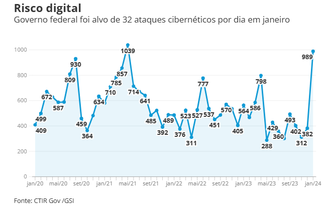
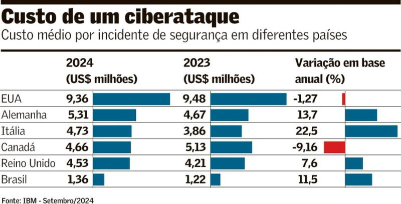

O Problema — A Realidade da Segurança Digital no Setor Público
1. Introdução — O Cenário Alarmante da Cibersegurança no Brasil
O Brasil ocupa hoje a preocupante posição de segundo país no mundo em quantidade de ataques cibernéticos, com uma média de 1.379 ataques por minuto, segundo o relatório Panorama de Ameaças para a América Latina 2024.
No setor público, a situação é ainda mais grave. Dados do próprio Gabinete de Segurança Institucional (GSI) apontam que janeiro de 2024 foi o mês com o maior número de ataques cibernéticos dos últimos quatro anos, registrando 989 incidentes — uma média de 32 ataques por dia.
Esses ataques não são apenas números: eles paralisam hospitais, derrubam sistemas essenciais, comprometem dados de cidadãos e colocam em risco a continuidade dos serviços públicos.
2. Principais Ameaças e Fragilidades
Segundo dados do GSI, os tipos de incidentes mais comuns no setor público são:
- Vazamento de dados (413 casos em janeiro/24);
- Vulnerabilidades em criptografia;
- Defacement — modificação maliciosa de sites públicos;
- Softwares desatualizados e vulneráveis;
- Varreduras e scans em redes sem proteção adequada;
- Ataques de negação de serviço (DRDoS);
- Phishing altamente direcionado e fraudes digitais.
Além disso, mais da metade dos incidentes sequer são resolvidos, deixando evidente o déficit na capacidade de resposta cibernética dos órgãos públicos.
🔥 Relato Pessoal Profissional — Vivência Direta
Na minha carreira, enfrento constantemente exatamente esses desafios. É comum que órgãos públicos nos procurem quando percebem sinais claros de que seus sistemas foram invadidos. Na maioria dos casos, essas invasões estão em estágio inicial, onde o invasor ainda não tem total compreensão do acesso que conseguiu, mas já representa uma ameaça latente e crescente.
Porém, esses órgãos logo se deparam com um problema crítico e recorrente: Seus próprios sistemas, desenvolvidos há anos, estão presos a contratos que os amarram a tecnologias ultrapassadas, como Apache, PHP, frameworks e linguagens descontinuadas.
Atualizar esses sistemas significaria quebrar sua operação. Isso os força a escolher entre manter os serviços funcionando ou manter o ambiente seguro.
Essa é a dependência tecnológica tóxica que muitos órgãos vivem atualmente.
Mas existem soluções. Por exemplo, o uso de WAF (Web Application Firewall), que permite proteger aplicações vulneráveis, mesmo que elas estejam rodando em versões legadas, sem necessidade de alterações no código fonte imediatamente.
E é mais importante entender que uma vulnerabilidade raramente é isolada. Ela leva a outra, e a outra, e a outra. Um site vulnerável pode ser a porta de entrada que permitirá que o atacante:
- Escale privilégios;
- Movimente-se lateralmente na rede;
- Comprometa outros sistemas, servidores, bancos de dados e até a infraestrutura interna do órgão.
E o pior: Atualmente, praticamente nenhum órgão no Brasil faz gestão de endpoints de forma estruturada e eficiente. Eles sequer sabem:
- Quantas máquinas possuem;
- Quais estão vulneráveis;
- Quais softwares estão desatualizados;
- Se já possuem malwares ou backdoors ativos.
Tudo isso em um cenário onde soluções de mercado, acessíveis e altamente eficazes, como Tanium, ManageEngine, CrowdStrike ou SentinelOne, podem entregar exatamente esse controle — e por um custo muito menor do que o custo de um único incidente.
3. O Efeito da Inteligência Artificial nas Ameaças Atuais
A especialista em cibersegurança Chelsea Jarvie alerta que a evolução da Inteligência Artificial (IA) está tornando os ataques mais sofisticados e perigosos, destacando que:
- Vishing (Voice Phishing) — uso de IA para simular vozes de parentes, autoridades e celebridades, enganando vítimas com extrema facilidade.
- Phishing hiperpersonalizado — baseado em dados vazados como CPF, endereço, nome dos filhos, dados de saúde e bancários.
- Fraudes por engenharia social em escala, facilitadas por IA generativa.
Jarvie afirma: “As tecnologias são essenciais, mas a resiliência cibernética depende tanto das pessoas quanto da cultura. O foco excessivo em tecnologia, sem treinamento e capacitação, torna-se uma armadilha organizacional.”
4. O Custo do Descuidado
O relatório “Cost of a Data Breach” da IBM (2024) aponta que:
- O custo médio de uma violação de dados no Brasil é de R$ 6,75 milhões.
- Quando o ataque envolve phishing, esse valor sobe para R$ 7,75 milhões.
E isso nem contabiliza:
- A paralisação de serviços;
- O impacto social;
- A perda de confiança pública;
- Os custos de recuperação, multas e sanções.
Como reforça Kaplan & Reed (2020) em Segurança Cibernética: “O custo de ignorar a segurança não está apenas no incidente, mas nos anos de recuperação, perda de confiança e impactos na sociedade.”
5. Fundamentação Técnica e Acadêmica
- William Stallings (2014) em Segurança em Redes: “A segurança não é um produto, mas um processo contínuo.”
- NIST SP 800-40 Rev.3: “Organizações que não realizam a gestão contínua de atualizações expõem seus ativos às ameaças mais básicas e conhecidas.”
- Jason Andress (2015) em Fundamentos de Segurança da Informação: “Se você não sabe o que possui, não sabe o que proteger.”
- Susan Harrington (2016) em Gestão de Segurança da Informação: “A segurança deve ser tratada como um processo de negócio, não como uma função técnica isolada.”
- Roger Grimes (2017) em Hacking the Hacker: “Hackers não atacam apenas código. Eles atacam sistemas, processos, pessoas e falhas de planejamento.”
- Nemeth et al. (2017) em Unix and Linux System Administration Handbook: “Ambientes mal documentados e complexos são um convite natural ao atacante.”
6. Conclusão — O Problema Está Posto
A realidade é cristalina:
- O governo brasileiro opera em ambientes tecnologicamente frágeis.
- Dependente de sistemas legados e contratos amarrados a soluções ultrapassadas.
- Sem controle sobre seus próprios ativos, endpoints e vulnerabilidades.
- Enquanto isso, o crime cibernético evolui, escala, automatiza e se profissionaliza.
E é exatamente por isso que o GovSafe existe. Para trazer luz a esses riscos, oferecer conscientização, embasamento técnico e propor soluções viáveis, práticas e aplicáveis — hoje — no ambiente do setor público.